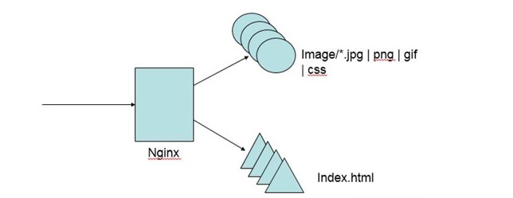
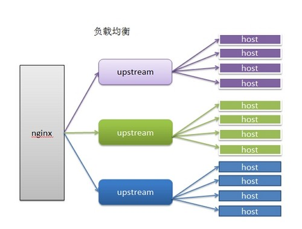
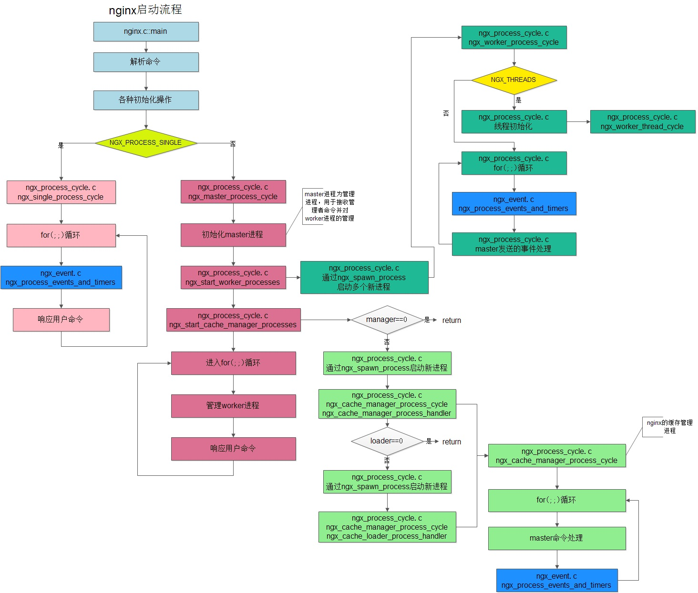

Nginx

Nginx（发音同 engine x）是异步框架的网页服务器，也可以用作反向代理、负载平衡器和 HTTP 缓存。该软件由伊戈尔·赛索耶夫创建并于 2004 年首次公开发布。2011 年成立同名公司以提供支持
优势
- 解决 c10k 问题（万级并发问题）
- IO 多路复用 多个描述符的 IO 操作都能在一个线程里并发交替顺序完成，复用线程 select 线性遍历文件描述符列表 1. 效率低下 2.最多只能有 1024 epoll 每当 fd 就绪，采用系统回调函数将 fd 放入 1.效率高 2.没有 1024 限制
- CPU 亲和 一种把 CPU 核心和 Nginx 工作进程绑定方式，把每个 worker 进程固定在一个 CPU 上执行，减少切换 CPU 和提交缓存命中率,获得更好的性能。
- sendfile 零拷贝传输模式 ![usercore]
Nginx 配置
# 设置工作进程的数量
worker_processes 1;
# 处理连接
events {
# 设置连接数
worker_connections 1024;
}
http {
# 文件拓展名查找集合
include mime.types;
# 当查找不到对应类型的时候默认值
default_type application/octet-stream;
# 日志格式，定义别名为 main
#log_format main '$remote_addr - $remote_user [$time_local] "$request" '
# '$status $body_bytes_sent "$http_referer" '
# '"$http_user_agent" "$http_x_forwarded_for"';
# 指定日志输入目录
#access_log logs/access.log main;
# 调用 sendfile 系统传输文件
sendfile on;
#tcp_nopush on;
# 客户端与服务器连接超时时间，超时自动断开
#keepalive_timeout 0;
keepalive_timeout 65;
# 开启gizip 压缩
#gzip on;
# 虚拟主机
server {
listen 80;
server_name localhost;
#charset koi8-r;
#access_log logs/host.access.log main;
# 路由
location / {
root html;
index index.html index.htm;
}
}
# 引入其他的配置文件
include servers/*;
}
常用的 nginx 命令
systemctl start nginx 启动nginx
ps –ef | grep nginx 查看 nginx 进程
netstat -ntpl 80 查看端口号
nginx -v //查看版本
nginx -t //测试配置是否正确
nginx -s stop //停止nginx
nginx -s qute //优雅停止nginx
nginx -s reload //重启nginx
nginx -s reopen //重新打开日志
日志备份
mv logs/assets.bak logs/assets.lock.bak nginx -s reopen 重新打开日志
rewrite 重写 rewrite （*.)$ /index/$1 try_files $uri ? /index.html?$uri
强缓存
!>Cache-Control 的优先级高于 Expires
1· expires 30d; 1· Cache-Control 1· add_header Cache-Control no-cache;
协商缓存
- etag on
- last-modified
压缩
gzip on;
gzip_static on; //静态资源
gzip_vary on; //是否在 http header 中添加 Vary: Accept-Encoding，建议开启
gzip_comp_level 5; //(建议) gzip 压缩比，1 压缩比最小处理速度最快，9 压缩比最大但处理最慢（传输快但比较消耗 cpu）
gzip_min_length 0 ; //默认值是 0，不管页面多大都压缩。 建议设置成大于 1k 的字节数，小于 1k 可能会越压越大
gzip_http_version 1.1; //版本信息
gzip_types text/plain application/x-javascript text/css application/xml text/javascript application/x-httpd-php image/jpeg image/gif image/png;
动静分离

location ～ .\.(jpg|png|jpeg) $ {
proxy_pass http://192.168.1.2.0:90
proxy_set_header X_Forwarded_for $remote_addr; //设置头部 IP 地址
}
配置文件访问权限(防盗链)
location ～ .\.(jpg|png) $ {
valid_referers none blocked 192.186.1.1;
if ($invalid_referer) {
return 403;
}
root /data/images
}
valid_referers
- none : 允许没有 http_refer 的请求访问资源；
- blocked : 允许不是http://开头的，不带协议的请求访问资源；
- 119.28.190.215 : 只允许指定 ip 来的请求访问资源；
配置跨域
location ~ .*\.json$ {
add_header Access-Control-Allow-Origin http://localhost:3000;
add_header Access-Control-Allow-Methods GET,POST,PUT,DELETE,OPTIONS;
root /data/json;
}
配置反向代理
upstream web_crm {
server 127.0.0.1:8080;
}
location /crm/ {
proxy_pass http://web_crm/crm/;
proxy_redirect off;
proxy_set_header Host $host;
proxy_http_version 1.1;
proxy_set_header Upgrade $http_upgrade;
proxy_set_header Connection ‘upgrade’;
proxy_cache_bypass $http_upgrade;
proxy_set_header X-Real-IP $remote_addr;
proxy_set_header X-Forwarded-For $proxy_add_x_forwarded_for;
}
过滤网络爬虫
location / {
if ($http_user_agent ~* "python|curl|java|wget|httpclient|okhttp") {
return 503;
}
# 正常处理
...
}
URL 重定向
server {
listen 80;
server_name www.abc.com;
location / {
rewrite ^/ http://192.168.18.250;
}
}
配置负载均衡

upstream web_mgrsys {
server 127.0.0.1:8090 weight=10;
server 127.0.0.1:3000 weight=3;
}
proxy_pass http://web_mgrsys;
负载均衡算法（策略）：
- 基于 cookie 值区别用户
- 基于 uri 利用一致性算法
- 基于 IP 地址
其他参数
- 1.backup ：备份机，所有服务器挂了之后才会生效
- 2.Weight：默认为 1.weight 越大，负载的权重就越大。
- 3.max_fails：允许请求失败的次数默认为 1.当超过最大次数时，返回 proxy_next_upstream 模块定义的错误
- 4.fail_timeout：max_fails 次失败后，暂停的时间。
- 5.max_conns：限制分配给某台 Server 处理的最大连接数量，超过这个数量，将不会分配新的连接给它。默认为 0，表示不限制。注意：1.5.9 之后的版本才有这个配置
- 6 ip_hash; 每个请求按访问 ip 的 hash 结果分配，这样每个访客固定访问一个后端服务器，可以解决 session 的问题
- 7 least_conn 最小连接数，哪个连接少就分给谁
- 8 url_hash（第三方) 按访问的 URL 地址来分配 请求，每个 URL 都定向到同一个后端 服务器上(缓存)
- 9 fair（第三方) 按后端服务器的响应时间来分配请求，响应时间短的优先分配。
https
ssl on; ssl_certificate_key ../certs
if 指令的条件表达式
- 检查变量为空或者值是否为 0,直接使用
- 将变量与字符串做匹配,使用=或者 !=
- 将变量与正则表达式做匹配
- 大小写敏感,~或者!
- 大小写不敏感,*或者!
- 检查文件是否存在,使用-f 或者 !-f
- 检查目录是否存在,使用 d 或者 !d
- 检查文件、目录、软链接是否存在,使用-e 或者!-e
- 检查是否为可执行文件,使用 x 或者!-x
location 匹配规则
常规 = ：精确匹配 ^～：匹配后不再进行正则匹配 然后使用最长的前缀字符串
限制客户端的并发连接数
ngx_http_limit_conn_module
限制客户端的每秒处理请求数
ngx_http_limit_req_module
请求限制
limit_req_zone
cpu 核数
worker_cpu_affinity
限制 IP 地址访问
location / {
deny 192.168.1.1;
}
浏览器缓存与 nginx 缀存
浏览器缓存
优点
- 使用有效缓存时,没有网络消耗,速度最快
- 即使有网络消耗,但对失效缓存使用 304 响应做到网络流量消耗最小化
缺点
仅提升一个用户的体验
nginx 缓存

优点
- 提升所有用户的体验
- 相比浏览器缓存,有效降低上游服务的負载
- 通过 304 响应减少 nginx 与上游服务间的流量消耗
缺点
- 用户仍然保持网络消耗 1 同时使用浏览器与 nginx 缓存
nginx 内置变量
$arg_PARAMETER 这个变量值为：GET请求中变量名PARAMETER参数的值。
$args 这个变量等于GET请求中的参数。例如，foo=123&bar=blahblah;这个变量只可以被修改
$binary_remote_addr 二进制码形式的客户端地址。
$body_bytes_sent 传送页面的字节数
$content_length 请求头中的Content-length字段。
$content_type 请求头中的Content-Type字段。
$cookie_COOKIE cookie COOKIE的值。
$document_root 当前请求在root指令中指定的值。
$document_uri 与$uri相同。
$host 请求中的主机头(Host)字段，如果请求中的主机头不可用或者空，则为处理请求的server名称(处理请求的server的server_name指令的值)。值为小写，不包含端口。
$hostname 机器名使用 gethostname系统调用的值
$http_HEADER HTTP请求头中的内容，HEADER为HTTP请求中的内容转为小写，-变为_(破折号变为下划线)，例如：$http_user_agent(Uaer-Agent的值), $http_referer...;
$sent_http_HEADER HTTP响应头中的内容，HEADER为HTTP响应中的内容转为小写，-变为_(破折号变为下划线)，例如： $sent_http_cache_control, $sent_http_content_type...;
$is_args 如果$args设置，值为"?"，否则为""。
$limit_rate 这个变量可以限制连接速率。
$nginx_version 当前运行的nginx版本号。
$query_string 与$args相同。
$remote_addr 客户端的IP地址。
$remote_port 客户端的端口。
$remote_user 已经经过Auth Basic Module验证的用户名。
$request_filename 当前连接请求的文件路径，由root或alias指令与URI请求生成。
$request_body 这个变量（0.7.58+）包含请求的主要信息。在使用proxy_pass或fastcgi_pass指令的location中比较有意义。
$request_body_file 客户端请求主体信息的临时文件名。
$request_completion 如果请求成功，设为"OK"；如果请求未完成或者不是一系列请求中最后一部分则设为空。
$request_method 这个变量是客户端请求的动作，通常为GET或POST。
包括0.8.20及之前的版本中，这个变量总为main request中的动作，如果当前请求是一个子请求，并不使用这个当前请求的动作。
$request_uri 这个变量等于包含一些客户端请求参数的原始URI，它无法修改，请查看$uri更改或重写URI。
$scheme 所用的协议，比如http或者是https，比如rewrite ^(.+)$ $scheme://example.com$1 redirect;
$server_addr 服务器地址，在完成一次系统调用后可以确定这个值，如果要绕开系统调用，则必须在listen中指定地址并且使用bind参数。
$server_name 服务器名称。
$server_port 请求到达服务器的端口号。
$server_protocol 请求使用的协议，通常是HTTP/1.0或HTTP/1.1。
$uri 请求中的当前URI(不带请求参数，参数位于$args)，不同于浏览器传递的$request_uri的值，它可以通过内部重定向，或者使用index指令进行修改。不包括协议和主机名，例如/foo/bar.html
http 请求相关变量
- arg 参数名 ：URL 中某个具体参数的值
- query_string: 与 args 变量完全相同
- args : 全部 URL 参数
- is_args: 如果请求 URL 中有参数则返回?否则返回空
- content_length: http 请求中标识包体长度的 Content-Length 头部的值
- content tvpe: 示识请求包体类型的 Content-Type 头部的值
- uri:请求的 URI (不同于 URL,不包括?后的参数)
- document_uri: 与 uri 完全相同
- request_uri: 请求的 URL(包括 UR 以及完整的参数)
- scheme: 协议名,例如 HTTP 或者 Https
- request_method: 请求方法,例如 GET 或者 POST
- request_length: 所有请求内容的大小,包括请求行、头部、包体等
- remote_user: 由 Http Basic Authentication 协议传入的用户名
- request_body_file : 临时存放请求包体的文件 client_body_in_file_only 强制所有包体存入的文件，且可是否决定删除
- request_body : 临时存放请求包体的文件
注 ⚠️
- 先从请求行中获取
- 如果含有 Host 头部,则用其值替换掉请求行中的主机名
- 如果前两者都取不到,则使用匹配上的 server name
TCP 连接相关的变量
- binary_remote_addr: 客户端地址的整型格式,对于 IPv4 是 4 字节,对于 Iv6 是 16 字节
- connection: 递增的连接序号
- connection_requests: 当前连接上执行过的请求数,对 keepalive 连接有意义
- remote_addr: 客户端端口
- remote_port: 客户端端口
proxy_protocol_addr: 若使用了 proxy protocol 协议则返回协议中的地址,否则返回空
proxy_protocol_port: 若使用了 proxy protocol 协议则返回协议中的端口,否则返回空
- server_addr: 服务器端地址
- server_port: 服务器端端口
- TCP_INFO: tcp 内核层参数,包括 $tcpinfo_rtt, $tcpinfo_rttvar, $tcpinfo_snd_cwnd, $tcpinfo_rev_space
- server protocol: 服务器端协议,例如 HTTP/1.l
nginx 处理请求过程中产生的变量
- request_time: 请求处理到现在的耗时,单位为秒,精确到毫秒
- server_name: 匹配上请求的 server_name 值
- https: 如果开启了 TLS/SSL,则返回 on,否则返回空
- request_completion: 若请求处理完则返回 OK,否则返回空
- request_id: 以 16 进制输出的请求标识 id,该 id 共含有 16 个字节,是随机生成的
- request_filename: 待访问文件的完整路径
- document_root:由 UR 和 root/alias 规则生成的文件夹路径
- realpath_root: 将 document roc 中的软链接等换成真实路径
- limit_rate:返回客户端响应时的速度上限,单位为每秒字节数。可以通过 set 指令修改对请求产生效果
nginx 系统变量
- time_local: 以本地时间标准输出的当前时间,例如 14Nov2018:15:55:37+C
- time_iso8601: 使用 ISO8601 标准输出的当前时间,例如 2018-114T15:5:37
- nginx-version: Nginx 版本号
- pid: 所属 worker 进程的进程 id
- pipe: 使用了管道则返回 p,否则返回
- hostname: 所在服务器的主机名,与 hostname 命令输出一致
- hostname: 1970 年 1 月 1 日到现在的时间,单位为秒,小数点后精确到毫秒
- 限制 proxy_next_upstream 的时间与次数
- 用 error_page 拦截上游失败相应
文件缓存配置
- open_file_cache 打开缓存的同时也指定了缓存最大数目，以及缓存的时间。我们可以设置一个相对高的最大时间，这样我们可以在它们不活动超过 20 秒后清除掉。
- open_file_cache_valid 在 open_file_cache 中指定检测正确信息的间隔时间。
- open_file_cache_min_uses 定义了 open_file_cache 中指令参数不活动时间期间里最小的文件数。
- open_file_cache_errors 指定了当搜索一个文件时是否缓存错误信息，也包括再次给配置中添加文件。我们也包括了服务器模块，这些是在不同文件中定义的。如果你的服务器模块不在这些位置，你就得修改这一行来指定正确的位置。